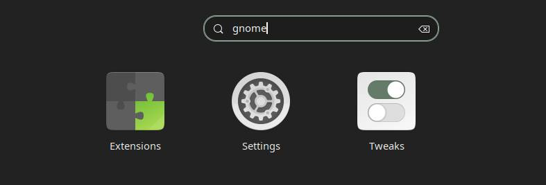
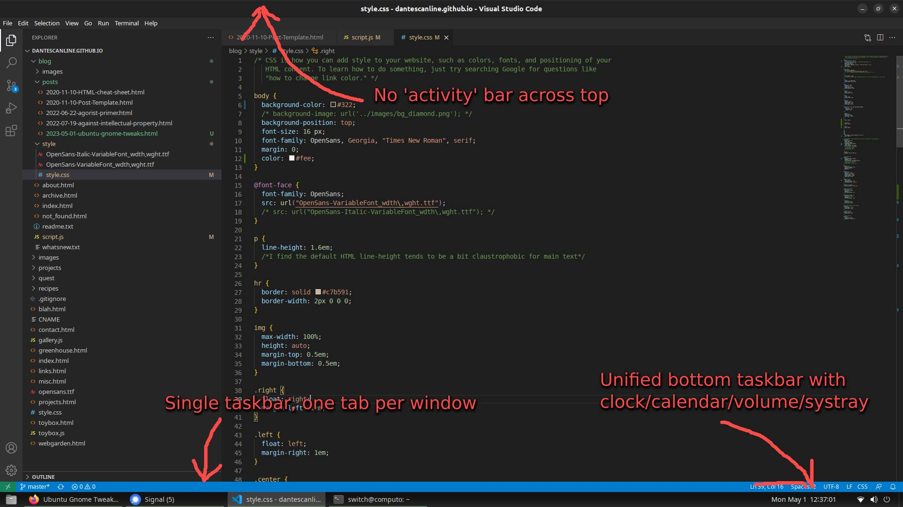

Settings for a sane Ubuntu 22.04
Recent experiments with linux have proven it a possibility for a complete windows replacement for me. 🍻
But what about this annoying gnome default interface? With a unified 'dock', a pointless 'activity manager' across the top and a few other annoyances it seems the simplest and most uniform desktop is also very short on configuration options.
We can fix this using gnome's Extensions and Tweaks GUIs
The Goal
Just want a windows-style taskbar, without application grouping or extra frames around the desktop? Let's do it
Reworking the dock into taskbar
A lot of the features that used to be available in gnome tweaks have been moved to the Gnome Extensions
application. You can grab it through apt as gnome-shell-extension-manager or thorugh the ubuntu
Software installer, where it is simply called Extensions
The actual extensions can be downloaded through this website (extensions.gnome.org) using a browser plugin (god knows why...)
The extensions we want for the taskbar fixing are:
- Dash To Panel
- Ubuntu Dock (preinstalled)
Turn on Dask to Panel and tweak the settings for panel thickness to your liking. Turn off the ubuntu dock to get rid of the annoying dock. Make sure to check out all the options tabs under dash to panel's settings, there's a lot available there.
Further Annoyances
Use gnome's Tweaks UI to fix some other remaining oddities. Tweaks should be preinstalled and available through ubuntu's Software manager
- Windows - Attach modal dialogs: turn this off for normal windows/mac style dialogs
- Windows - Center new windows: i think this is odd, turn it off
- Top Bar - Changing clock and calendar display under
- Appearence - change lock screen here!
- Keyboard & Mouse - here's missing settings for mouse acceleration 'Profiles' and touchpad settings
- Startup Applications - kill these fuckers here!